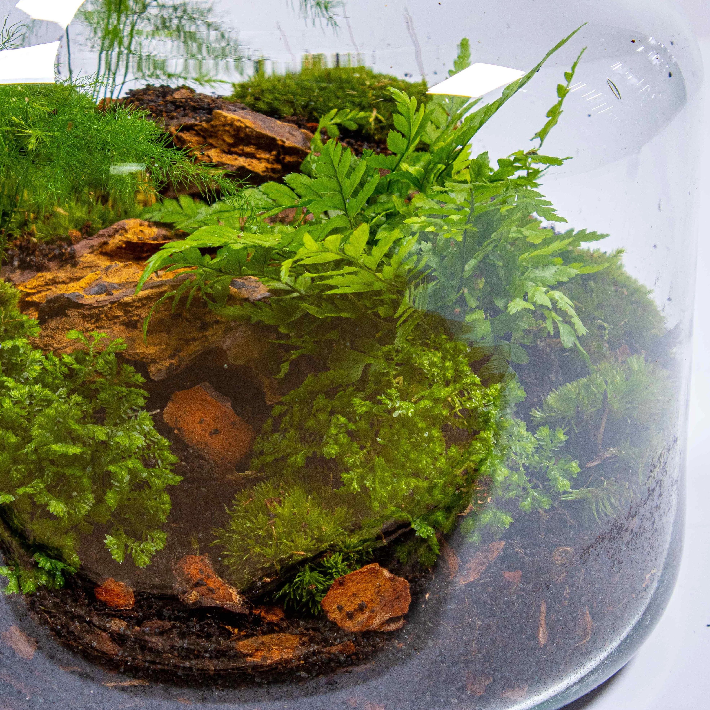

8/27/2025
Let's start with the most exciting part of building a dinosaur terrarium: the dinosaurs!
During the time that I did my research, I was particularly interested in the Tyrannosaurus Rex. Not purely for its ghostly popularity (a description I'll describe later), but moreso for a stuffed animal I discovered while walking with my partner through walgreens. I know it was around Easter because we were there for the discount candy that always went on sale after a major holiday, and I remember my partner picking out a small, toy shopping cart that held some bunny-shaped marshmallow candies.
We'd been walking past the plushie aisle and there sat one velvet Tyrannosaurus Rex plushie, but it wasn't akin to the sharp-toothed, boney, and honestly quite thin, rendition that I often saw, but it was a warm brown, dark-eyed, white-bellied stuffie that looked more like the realistic Tyrannosaurus model, Sue. If you haven't seen her, she is this gorgeous sculpture of a scientifically accurate Rex. She is gorgeous; a dusty brown coat, a chubby build, green puppy-dog eyes, lips protecting brittle teeth curved over a small herbivore. A beauty no one can see. Not really.
Then I found another one. This time at a Hobby Lobby. Of all places. However, the plush was a little different. It used a different fabric; it was fluffier, but not softer. Same eyes, same white underbelly, same color. Except there was a tooth patterning sewn into its lower jaw.
When I think of Sue, I always imagine myself looking up at her. I get this strange pain in my chest, like how when I find a dog cute, but it's old, and I know it won't be here for much longer; even though I know it's been a long time since she left. Oh but how I know that I'm never anxious around old dogs. It's stupid, I know, I never knew her well, but I wish I did. I'm just glad I never knew her now, because I know if I did, I'd be afraid of her the same way I'm afraid of dogs.
Let's start with the most exciting part of building a dinosaur terrarium: the dinosaurs!
During the time that I did my research, I was particularly interested in the Tyrannosaurus Rex. Not purely for its ghostly popularity (a description I'll describe later), but moreso for a stuffed animal I discovered while walking with my partner through walgreens. I know it was around Easter because we were there for the discount candy that always went on sale after a major holiday, and I remember my partner picking out a small, toy shopping cart that held some bunny-shaped marshmallow candies.
We'd been walking past the plushie aisle and there sat one velvet Tyrannosaurus Rex plushie, but it wasn't akin to the sharp-toothed, boney, and honestly quite thin, rendition that I often saw, but it was a warm brown, dark-eyed, white-bellied stuffie that looked more like the realistic Tyrannosaurus model, Sue. If you haven't seen her, she is this gorgeous sculpture of a scientifically accurate Rex. She is gorgeous; a dusty brown coat, a chubby build, green puppy-dog eyes, lips protecting brittle teeth curved over a small herbivore. A beauty no one can see. Not really.
Then I found another one. This time at a Hobby Lobby. Of all places. However, the plush was a little different. It used a different fabric; it was fluffier, but not softer. Same eyes, same white underbelly, same color. Except there was a tooth patterning sewn into its lower jaw.
When I think of Sue, I always imagine myself looking up at her. I get this strange pain in my chest, like how when I find a dog cute, but it's old, and I know it won't be here for much longer; even though I know it's been a long time since she left. Oh but how I know that I'm never anxious around old dogs. It's stupid, I know, I never knew her well, but I wish I did. I'm just glad I never knew her now, because I know if I did, I'd be afraid of her the same way I'm afraid of dogs.
 VS